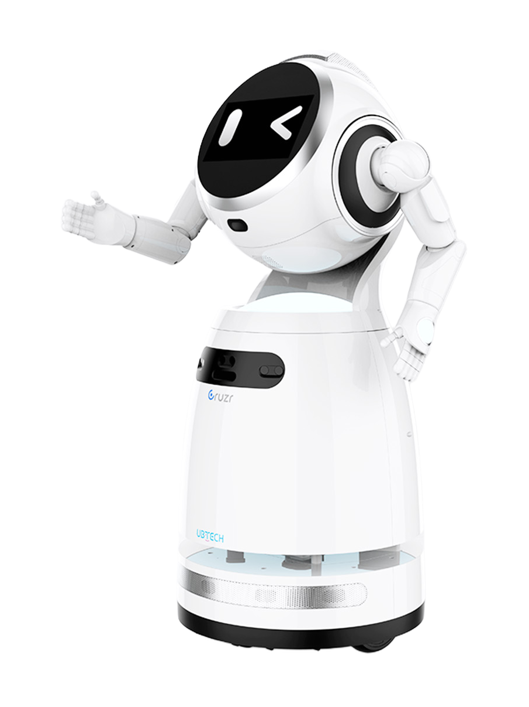
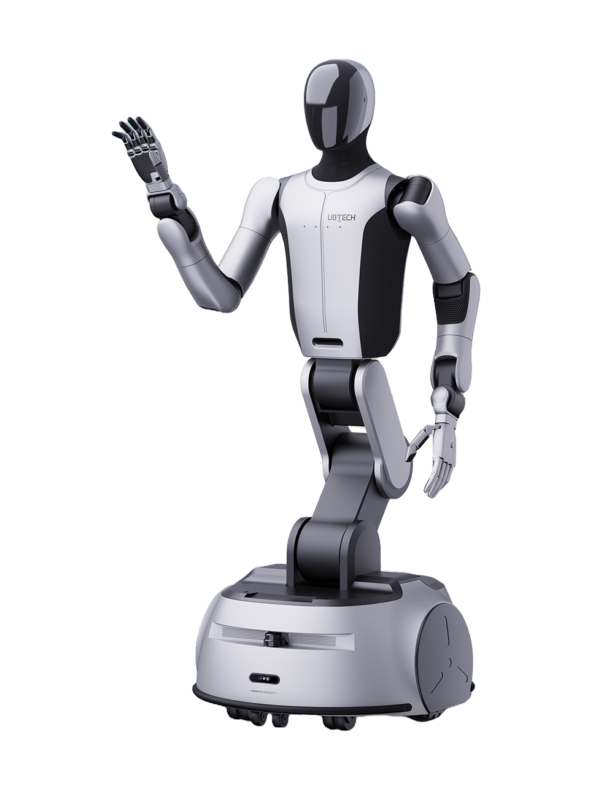
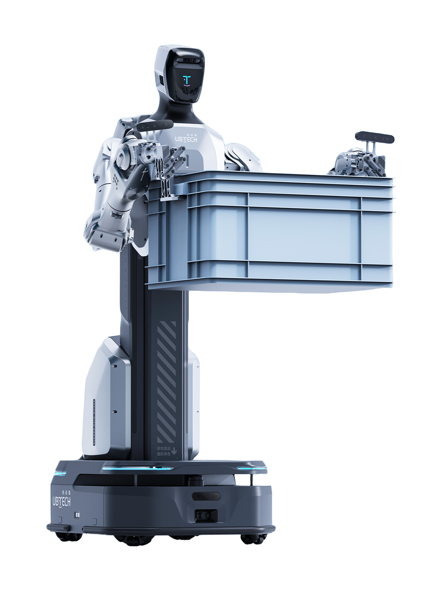
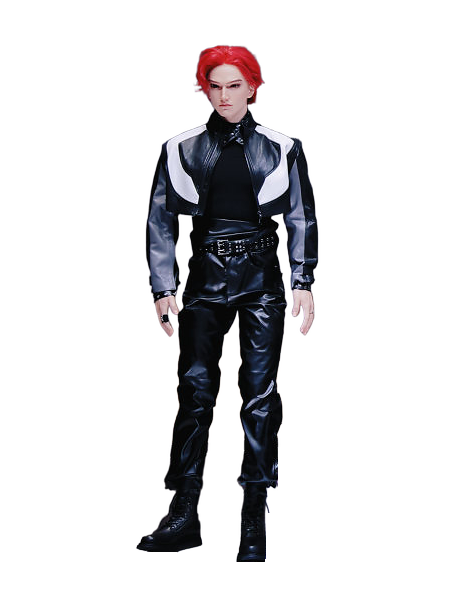
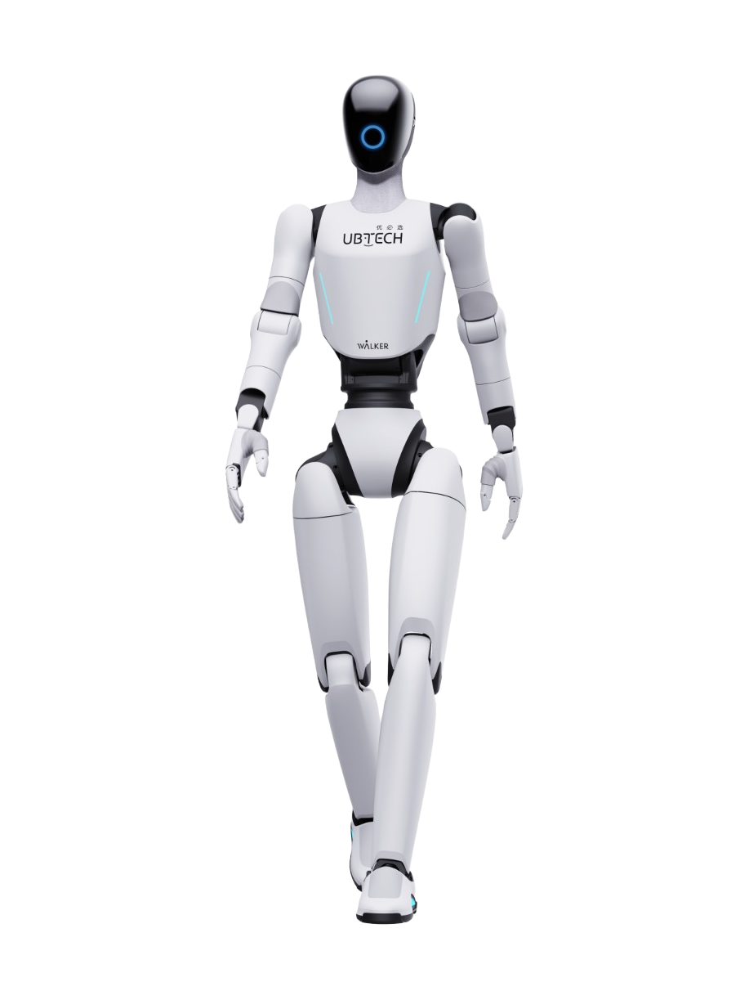

Cruzr 1S
A wheeled humanoid robot from China.
Sources retrieved: 6 October 2026 (B, D) · 4 November 2026 (A, C)
- Intended use, per the manufacturer
- Not stated
- Indicative price
- 15,999.99USD
- Source and note: Indicative priceC robotsinternational.com/UBTECH-Cruzr-Intelligent-Commercial-Service-Robot.htm · Retrieved 4 November 2026Caveat. Price listed by Robots International, a reseller; it is not a manufacturer price.

- Person
175 cm68.9 in - 63 cm24.8 inHeight
121.4 cm47.8 in
Manufacturer's own photo.
Drawn at one scale next to a 175 cm person, from the figures the maker states: height 121.4 cm and width 63 cm.Drawn at one scale next to a 68.9 in person, from the figures the maker states, converted to inches: height 47.8 in and width 24.8 in.
Specifications
12/32 specifications disclosed 20 not stated
20 fields hidden
How to read the figuresShow guideClose
- not statedNo source
- noyesStated by a source
- 0Reported as zero
- ASource
- A*Source with a caveat (select it)
- CERecords only what the manufacturer states regarding CE marking.
Select a source marker for source details and notes.
Physical7/13 disclosed

Power1/5 disclosed
Sensing and autonomy2/6 disclosed
Payload and expansion0/3 disclosed
Commercial1/1 disclosed
Compliance & certifications1/4 disclosed
Against the field
Each strip holds every robot of this type in the guide that states the figure, one bar per group of values. Further right means a larger figure, not a better robot. A taller bar means more robots in that group.
Height
121.4cm47.8inOur conversion from 1214 mm. The manufacturer does not state an imperial figure itself, so the conversion has no source of its own.
109 wheeled humanoids state a height
87 state a higher figure, 6 a lower one. 12 state a range that includes this figure. 3 state only a bound (≥ or ≤) and are not ranked.
Weight
45kg99.2lbOur conversion from 45 kg. The manufacturer does not state an imperial figure itself, so the conversion has no source of its own.
94 wheeled humanoids state a weight
75 state a higher figure, 8 a lower one. 2 more state exactly the same figure. 8 state only a bound (≥ or ≤) and are not ranked. Log scale: each step along the axis multiplies the value.
Runtime
at most 480minNote: load condition not stated
106 wheeled humanoids state a runtime
Cruzr 1S states an upper limit, not one figure, so it is shown open-ended and not ranked against the others. 30 state only a bound (≥ or ≤) and are not ranked.
Indicative price
15,999.99USD
14 wheeled humanoids state a public price
2 state a higher figure, 7 a lower one. 4 state only a bound (≥ or ≤) and are not ranked. Log scale: each step along the axis multiplies the value.
Max speed
3.6km/h2.24mphOur conversion from 1 m/s. The manufacturer does not state an imperial figure itself, so the conversion has no source of its own.
98 wheeled humanoids state a top speed
56 state a higher figure, 4 a lower one. 6 more state exactly the same figure. 16 state a range that includes this figure. 15 state only a bound (≥ or ≤) and are not ranked.
Notes
UBTECH calls Cruzr 1S a cloud-based intelligent service robot with a user-friendly humanoid design.
The specification image shows a head with a screen face, a torso and two arms with hands on a round wheeled base, and names a wheel motor with a suspension system.
Both arms are covered with a soft electronic skin, according to the specification image.
The robot greets visitors, answers questions with a built-in multilingual large model and leads guided tours, according to the page.
Navigation uses UBTECH's own U-SLAM system, which the producer says plans paths to the centimetre.
Sources
One line per source, not per figure: a source has one retrieval date.
- Amuzix.eu/dk/UBTech/Robotic/UBT-CRUZR1S/UBTECH-CRUZR-1S-Programmable-humanoid-service-robotSecondary. Retrieved 4 November 2026
- Bowebsite-cdn.ubtrobot.com/resources/image/2025/09/25/723611625238597.pngRetrieved 6 October 2026
- Crobotsinternational.com/UBTECH-Cruzr-Intelligent-Commercial-Service-Robot.htmSecondary. Retrieved 4 November 2026
- Dubtrobot.com/en/commercial/products/cruzr-1sMain source. Retrieved 6 October 2026
More robots
Same manufacturer

Cruzr S2UBTECH Robotics

Cruzr Y1UBTECH Robotics
- No photograph
U1 PROUBTECH Robotics

U1 UltraUBTECH Robotics

Walker CUBTECH Robotics

Walker C1UBTECH Robotics
All robots from UBTECH Robotics